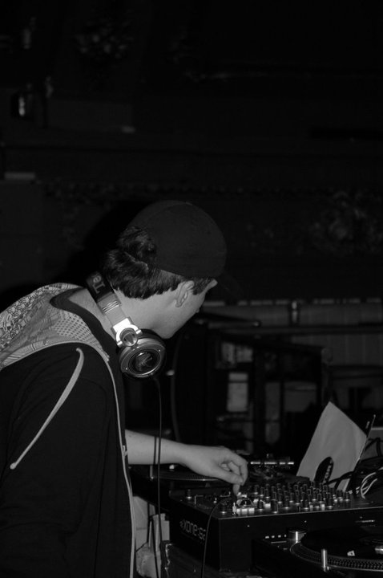

Limerick // Producer
[Your tagline here]

Mark db is an Irish electronic musician and composer, working the darker edges of electronic music since 2006 — from dubstep and drum & bass to the dark techno-bassline he plays today.
DJ, producer, promoter and remixer. His sets run fast and relentless, shifting from ominous, atmospheric vibes to straight-up dancefloor bangers.
Based in Limerick, he ran the club nights Lexes, Headroom, Sweatbox and Filthstep, helped run The Great Friday Festival and The Night After Christmas, and has played LIFE Festival, BUMP and Mystik Festival.
By 2012 he had been promoting for about 11 years. He got onto Mutant Bass Records by emailing them his track “Found My Squgee”.
Winner of IDMA Best Up And Coming DJ in 2011, founder of Play It by Ear Records, and also heard under the monikers DeadlyBuzz and Daigoro.
Over the years he has supported Marcus Intalex, Goth-Trad and Fish Go Deep at Dolans, Limerick, Clark at Electric Underground, Kanji Kinetic at Sweatbox, Limerick, and Youngsta (Tempa / Rinse) and Distance (Chestplate / Planet Mu / Tectonic) at Macronite / Evolution DnB nights in Limerick, plus Thelem at The Pav, Cork, Reeko and Strangeways at The Twisted Pepper, Dublin, Phonetik, Jet Li, J:Kenzo, Stray, Squire of Gothos, Jamie Behan, Dan Sykes, Warren Knowles, Mike Fate, Romeo:Butcher, Cas:Et and Ricard “Entropy”. See all →
Pharmacia, Limerick · as Mark DB, with Jet Li, Mike Fate, Cas:Et
Liquid Lounge, Cork · as Mark DB, with Ricard "Entropy", Mike Fate, Romeo:Butcher
Dolans, Limerick (Macronite, likely) · as Mark DB, with Distance, Warren Knowles, Mike Fate, Romeo:Butcher
Dolans, Limerick (Macronite) · as Mark DB, with Youngsta, Mike Fate, Romeo:Butcher
The Pav, Cork · as Mark DB, with Thelem, Mike Fate, Romeo:Butcher
Nancy Spain's, Cork. His monthly night, about 15 nights.
Supported Goth-Trad at Dolans, Limerick (Macronite) · Fish Go Deep at Dolans, Limerick · Clark at Electric Underground · Kanji Kinetic at Sweatbox, Limerick · Cypress Avenue, the Mardyke and Fast Eddies in Cork · the Cork/Limerick bass scene (Evolution DnB, Macronite) · LIFE Festival, BUMP, Mystik Festival
Acts Mark DB / DeadlyBuzz has played alongside and supported:
21 Feb 2012
Interview and mix. Calls him a veteran of the Irish scene and notes his IDMA Best Up And Coming DJ award in 2011.
2 Apr 2010
Great Friday Festival: Deadly Buzz in the DJ tent at a fundraiser for Rape Crisis Mid-West.
Autumn 2011
Filthstep returns to Dolan's on 1 Oct 2011 with a Funktion-One sound system.
13 Jan 2011
Unite 2011 at Dolan's, Limerick: a DJ battle featuring the Filthy Dubstep crew.
Behringer TD3 - Make Patterns Easy Again
Bookings & enquiries: [your@email.here]